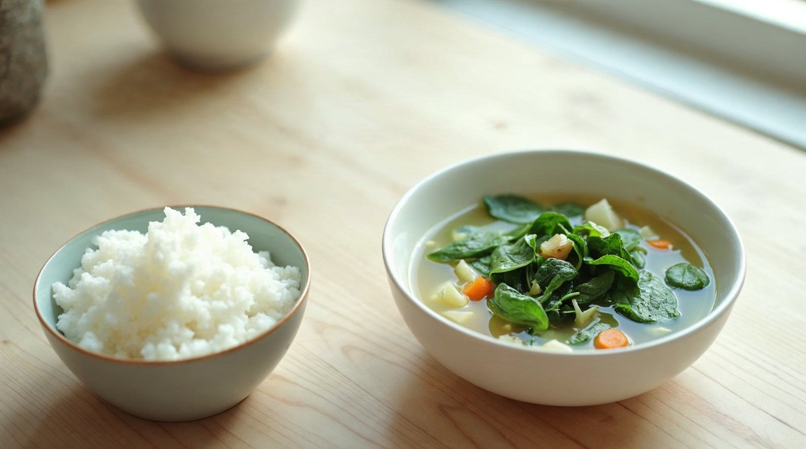
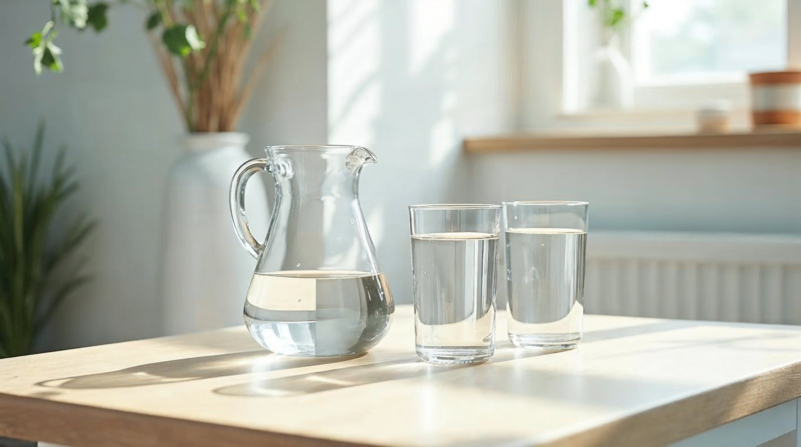
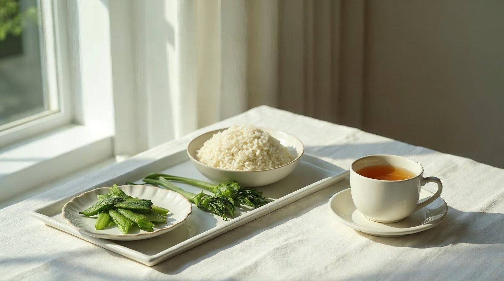
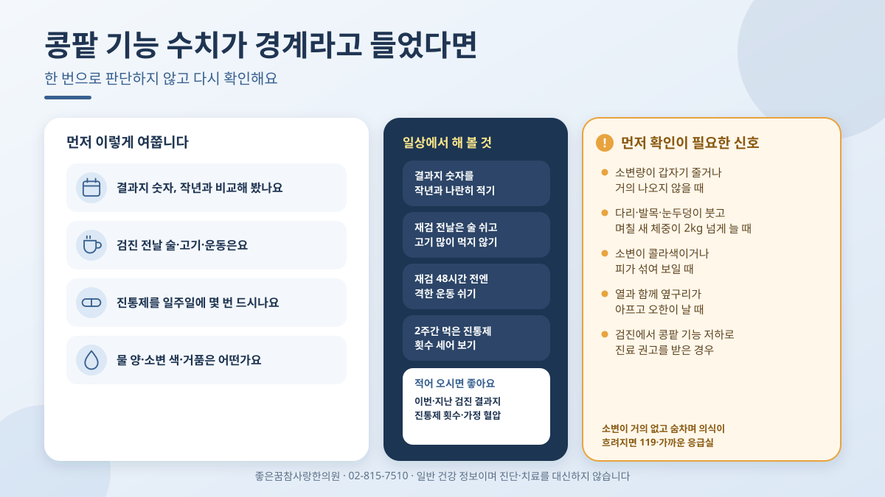

이종호 한의사 감수좋은꿈참사랑한의원 대표원장 (한의사 면허번호 19769)발행 2026-11-27 · 수정 2026-11-27
이 글의 차례
연말에 몰아서 받은 건강검진 결과지에서 크레아티닌이 조금 높거나 사구체여과율(eGFR)이 낮게 나와 경계 또는 재검 권고라는 표시를 보면, 콩팥이 나빠진 건 아닌지 걱정이 앞섭니다.
이 두 숫자는 콩팥이 피 속 노폐물을 걸러 내는 힘을 가늠하는 지표인데, 검사 전날의 술과 고기, 격한 운동, 물 부족, 근육량, 복용 중인 약에 따라 한 번쯤 경계로 나오기도 합니다. 그래서 한 번의 결과만으로 판단하지 않고, 같은 결과지의 소변 단백과 혈압, 혈당을 함께 살핀 뒤 병원 안내에 맞춰 다시 확인하는 것이 먼저입니다.
그사이에는 진통제를 얼마나 자주 먹는지, 물과 짠 음식은 어떤지, 혈압과 혈당이 어떤 흐름인지를 정리해 두면 재검 결과를 해석하기도, 다음 상담을 이어 가기도 쉬워집니다. 소변이 갑자기 줄거나 몸이 눈에 띄게 붓고 숨이 찬다면 재검을 기다리지 말고 진료를 먼저 받으세요.
크레아티닌과 사구체여과율은 무엇을 보여 줄까요
- 크레아티닌은 근육이 움직이며 생기는 노폐물로, 대부분 콩팥을 통해 소변으로 빠져나갑니다. 콩팥이 걸러 내는 힘이 떨어지면 피 속 크레아티닌이 올라갑니다.
- 사구체여과율은 크레아티닌 수치에 나이와 성별을 넣어 계산한 추정값입니다. 직접 잰 값이 아니라 계산값이라는 점을 기억해 두면 결과를 이해하기 쉽습니다.
- 흔히 90 이상을 정상 범위로 보고, 60~89는 가볍게 낮은 범위로 나이가 들면 흔히 보입니다. 60 미만이 3개월 넘게 이어지거나 소변에서 단백이 계속 나오면 만성 콩팥병으로 진단할 수 있는 기준에 해당합니다. 진단은 반복 검사와 다른 결과를 함께 보고 의사가 내립니다.
- 소변 검사의 단백 칸은 사구체여과율이 정상이어도 콩팥이 부담을 받고 있다는 신호가 될 수 있어 함께 봅니다.
- 근육량이 많은 사람은 크레아티닌이 높게 나와 사구체여과율이 실제보다 낮게 계산되고, 근육이 적은 어르신이나 마른 분은 반대로 실제보다 좋아 보일 수 있습니다. 그래서 병원에 따라 근육량의 영향을 덜 받는 시스타틴C 같은 다른 검사로 함께 보기도 합니다.
왜 연말 검진에서 경계로 나오기 쉬울까요
- 송년회 다음 날 아침에 검진을 받으면 술 때문에 몸의 물이 빠진 상태여서 크레아티닌이 일시적으로 오를 수 있습니다.
- 검사 전날 저녁 고기를 많이 먹으면, 익힌 고기에 든 성분 때문에 크레아티닌이 잠시 높게 나오기도 합니다.
- 검진 하루 이틀 전 헬스장에서 하체 운동을 세게 했거나 오래 달렸다면 근육에서 나온 노폐물이 늘어 수치가 오를 수 있습니다.
- 운동하는 분들이 먹는 크레아틴 보충제와 고단백 보충제도 수치에 영향을 줄 수 있습니다.
- 겨울에는 갈증을 덜 느껴 물을 적게 마시고, 난방으로 몸의 물이 빠지기 쉽습니다.
- 허리, 무릎, 두통, 생리통으로 소염진통제를 자주 먹으면 콩팥으로 가는 혈류가 줄어 부담이 될 수 있습니다. 일부 혈압약과 이뇨제, 위장약, 항생제도 수치에 영향을 줄 수 있는데, 이런 약은 처방한 의사가 수치를 보며 판단하는 부분이라 임의로 끊지 않습니다.
- 당뇨와 고혈압은 콩팥에 오랜 시간 부담을 주는 대표적인 원인이어서, 해마다 혈당과 혈압이 조금씩 오르고 있었다면 콩팥 수치도 함께 눈여겨봅니다.
- 한의학에서 말하는 신(腎)은 콩팥이라는 장기 하나보다 넓은 개념으로, 성장과 노화, 허리와 무릎, 소변, 추위를 타는 정도까지 함께 묶어 봅니다. 그래서 한의학에서 신이 약하다는 말이 검진의 콩팥 수치 이상을 뜻하는 것은 아니며, 두 가지는 따로 확인합니다.
먼저 이렇게 여쭙니다
- 결과지의 크레아티닌, 사구체여과율, 소변 단백과 잠혈, 혈압, 공복혈당, 당화혈색소 숫자를 여쭙고, 작년 결과와 비교해 봅니다.
- 검진 전날 저녁 무엇을 드셨는지, 술을 드셨는지, 검진 하루 이틀 전 운동을 세게 하셨는지 여쭙니다.
- 진통제를 일주일에 몇 번 드시는지, 크레아틴이나 단백질 보충제, 즙과 환 같은 건강식품을 드시는지 여쭙니다.
- 혈압약, 당뇨약, 이뇨제, 위장약 등 복용 중인 약을 여쭙습니다.
- 하루에 물을 얼마나 드시는지, 소변 색과 횟수, 거품이 오래 남는지, 밤에 소변 때문에 깨시는지 여쭙니다.
- 아침에 눈두덩이나 발목이 붓는지, 쉽게 피곤하고 입맛이 떨어졌는지 여쭙니다.
- 가족 중 콩팥 질환이나 투석을 받은 분이 있는지, 요로결석이나 방광염이 반복된 적이 있는지 여쭙니다.

일상에서 먼저 해 볼 수 있는 것
이번 주: 결과지 다시 읽기
- 크레아티닌, 사구체여과율, 소변 단백(음성, ±, + 등), 소변 잠혈, 혈압, 공복혈당, 당화혈색소, 요산을 한 줄로 적습니다.
- 작년이나 재작년 결과가 있다면 옆에 나란히 적어, 한 번 튄 숫자인지 몇 년째 조금씩 내려온 흐름인지 봅니다.
- 결과지에 재검 시기가 적혀 있거나 검진 기관에서 안내를 받았다면 그 날짜를 달력에 먼저 적습니다.
재검 전 2~3일: 수치를 흔드는 요인 줄이기
- 재검 전날은 술을 마시지 않고, 저녁에 고기를 많이 먹지 않습니다.
- 재검 48시간 전부터는 무거운 근력 운동이나 오래 달리기를 쉬고, 가벼운 걷기 정도만 합니다.
- 크레아틴이나 고단백 보충제를 먹고 있다면 재검 전에 언제부터 쉬어야 할지 병원에 물어봅니다.
- 물은 평소대로 마시고, 수치를 낮추려고 갑자기 많이 마시지도 않습니다.
물 마시는 습관
- 겨울에는 갈증이 없어도 아침, 오전, 점심, 오후, 저녁에 나눠 하루 6~8잔 정도를 목표로 합니다. 미지근한 물이나 보리차가 마시기 편합니다.
- 심장이나 콩팥 질환으로 물을 제한하라는 안내를 받았다면 그 안내를 먼저 따릅니다.
- 소변 색이 진한 노란색이면 물이 부족한 신호일 수 있어 한두 잔 더 마십니다.
진통제 습관 정리하기
- 최근 2주 동안 먹은 진통제를 약 봉투나 영수증으로 모아 횟수를 셉니다.
- 일주일에 여러 번 먹어야 할 만큼 아프다면, 약을 바꾸기 전에 통증 자체를 진료받는 편이 좋습니다. 어떤 진통제가 나에게 맞는지는 약사나 의사와 상의합니다.
혈압과 혈당, 짠맛
- 집에 혈압계가 있다면 일주일 동안 아침 기상 뒤와 저녁 잠들기 전에 앉아서 두 번씩 재어 적습니다.
- 국물은 반 이상 남기고, 김장 김치와 젓갈, 장아찌는 한 끼에 한 접시만 둡니다.
- 당뇨가 있다면 당화혈색소 흐름도 함께 봅니다. 혈당 관리는 콩팥을 지키는 일과 이어져 있습니다.
움직임과 건강식품
- 재검 직전에만 격한 운동을 쉬고, 평소에는 하루 30분 걷기를 이어 갑니다.
- 즙, 환, 분말 같은 건강식품을 여러 가지 함께 먹고 있다면 종류를 적어 두고, 새로운 것은 결과를 확인할 때까지 늘리지 않습니다. 콩팥 기능이 많이 떨어진 경우에는 칼륨이 많은 즙이 부담이 될 수 있습니다.

상황별 예시
- 예를 들어 송년회에서 늦게까지 소주와 삼겹살을 먹고 물은 거의 마시지 않은 채 다음 날 아침 검진을 받은 40대 직장인이 사구체여과율 경계를 들었고 소변 단백은 음성이었다면, 병원 안내에 맞춰 재검 날짜를 잡고 전날 술과 고기를 피한 상태에서 다시 확인합니다.
- 예를 들어 헬스장에서 하체 운동을 꾸준히 하고 단백질 보충제와 크레아틴을 먹는 30대가 크레아티닌이 높게 나왔다면, 근육량의 영향일 수 있어 재검 때 운동과 보충제 이야기를 함께 하고 시스타틴C 같은 다른 검사가 필요한지 상의해 봅니다. 인바디로 골격근량을 함께 확인해 두면 숫자를 이해하는 데 참고가 됩니다.
- 예를 들어 무릎과 허리가 아파 소염진통제를 거의 매일 드시고 혈압약도 드시는 60대 어르신이라면, 진통제 횟수를 정리해 혈압약을 처방한 의사와 상의하고, 통증 자체는 따로 진료를 받아 진통제에 기대는 날을 줄이는 방향을 찾습니다.
- 예를 들어 당뇨를 10년 넘게 앓아 온 분이 소변 단백 양성과 사구체여과율 저하를 함께 들었다면, 생활 조절보다 내과 진료를 먼저 받으시도록 권합니다.
- 예를 들어 체중이 적고 근육이 적은 70대 어르신은 사구체여과율이 정상으로 나와도 실제 콩팥 기능을 다 반영하지 못할 수 있어, 약을 새로 시작하거나 한약을 상의할 때 이런 점을 함께 고려합니다.
자주 하는 오해
- 한 번 경계가 나오면 콩팥병이 시작된 것이라고 걱정하기 쉽지만, 만성 콩팥병은 3개월 넘게 이어지는 변화를 보고 진단합니다. 재검과 흐름 확인이 먼저입니다.
- 물을 많이 마실수록 콩팥에 좋다고 여겨 하루에 몇 리터씩 마시는 분도 있습니다. 부족하지 않게 나눠 마시는 것이 중요하고, 지나치게 많이 마신다고 수치가 더 나아지는 것은 아닙니다.
- 사구체여과율이 정상이면 소변 결과는 신경 쓰지 않아도 된다고 생각하기도 합니다. 소변 단백은 사구체여과율보다 먼저 변화를 보여 주기도 해서 함께 봅니다.
- 혈압약이 콩팥을 상하게 한다며 스스로 끊는 분도 있습니다. 일부 혈압약은 시작 초기에 수치가 조금 변할 수 있지만 이는 처방한 의사가 판단할 부분이고, 혈압 조절 자체가 콩팥을 지키는 데 중요합니다.
- 콩팥 수치가 경계면 한약은 아예 상담받을 수 없다고 여기거나, 반대로 자연에서 온 약재이니 아무 걱정이 없다고 여기는 분도 있습니다. 두 경우 모두 수치와 복용 약을 알려 주시고 처방과 복용 기간을 함께 정하는 것이 안전합니다.
스스로 점검해 보세요
- 검진 전날 술을 마셨거나 고기를 많이 먹었다.
- 검진 하루 이틀 전에 운동을 세게 했다.
- 소염진통제를 일주일에 세 번 넘게 먹는다.
- 크레아틴, 단백질 보충제, 여러 가지 즙이나 환을 먹는다.
- 겨울 들어 물을 하루 서너 잔도 마시지 않는 날이 많다.
- 혈압이나 혈당이 해마다 조금씩 오르고 있다.
- 소변 거품이 오래 남거나 아침에 눈두덩과 발목이 붓는다.

한의원에서 함께 살필 수 있는 경우
- 재검 전까지 생활을 어떻게 정리할지 함께 계획하고 싶은 경우
- 허리, 무릎 통증 때문에 진통제를 자주 먹게 되어 통증 자체를 진료받고 싶은 경우
- 콩팥 수치가 경계인 상태에서 한약 상담을 받고 싶은 경우
- 혈압, 혈당, 체중, 근육량을 한꺼번에 기록하며 흐름을 보고 싶은 경우
좋은꿈참사랑한의원에서는 첫 방문 때 검진 결과지와 작년 결과, 검진 전날의 생활, 복용 중인 약과 진통제, 건강식품을 먼저 여쭙고, 물과 소변, 붓기, 잠과 식사를 차례로 정리합니다. 그다음 맥부터 짚어 보고, 혀와 배를 살펴 몸이 붓는 정도와 소화, 피로의 정도를 확인합니다.
필요하면 인바디 770으로 골격근량과 체수분을 확인해 크레아티닌 숫자를 이해하는 참고로 삼습니다. 원내 혈액 검사기로 확인할 수 있는 항목은 방문 전 전화로 확인해 주세요. 한약을 상의할 때는 콩팥 수치와 복용 중인 약을 함께 보고 처방 구성과 복용 기간을 정하며, 대표원장이 검수한 약재를 원내에서 달여 드립니다.
소변 단백이 계속 나오거나 수치가 진단 기준에 가까우면 내과나 신장내과 진료를 먼저 받으시도록 안내해 드립니다. 다시 오시면 재검 결과와 그사이 기록을 이어서 보며 다음 단계를 함께 정합니다.
얼마나 지켜보고 언제 상담할까요
- 재검 시기는 결과지나 검진 기관의 안내를 먼저 따릅니다. 따로 안내가 없었다면 병원에 문의해 다시 확인할 시기를 정합니다.
- 재검에서도 경계가 이어지거나 소변 단백이 함께 나오면 내과나 신장내과에서 원인을 확인합니다.
- 재검에서 정상 범위로 돌아왔다면 생활 습관은 이어 가고 다음 검진에서 흐름을 봅니다.
- 아래 신호가 있으면 재검을 기다리지 말고 진료를 먼저 받습니다.
이렇게 기록해 오시면 상담이 쉬워집니다
- 이번과 지난 검진 결과지(크레아티닌, 사구체여과율, 소변 검사, 혈압, 혈당)
- 검진 전날의 식사, 술, 운동
- 최근 2주 동안의 진통제 이름과 횟수
- 복용 중인 약, 보충제, 건강식품 목록
- 일주일 동안의 가정 혈압 기록
- 하루 물의 양, 소변 색과 거품, 붓기 변화
이런 증상은 먼저 확인이 필요합니다
- 소변량이 갑자기 눈에 띄게 줄거나 하루 종일 거의 나오지 않는 경우
- 다리, 발목, 눈두덩이 뚜렷하게 붓고 며칠 사이 체중이 2kg 넘게 늘어난 경우
이런 신호가 있으면 한의원보다 가까운 병원이나 응급실을 먼저 찾으세요.
관련 글

여쭙는 것
- 결과지의 크레아티닌, 사구체여과율, 소변 단백과 잠혈, 혈압, 공복혈당, 당화혈색소…
- 검진 전날 저녁 무엇을 드셨는지, 술을 드셨는지, 검진 하루 이틀 전 운동을 세게…
- 진통제를 일주일에 몇 번 드시는지, 크레아틴이나 단백질 보충제, 즙과 환 같은 건강…
생활에서 해 볼 것
- 크레아티닌, 사구체여과율, 소변 단백(음성, ±, + 등), 소변 잠혈, 혈압, 공…
- 작년이나 재작년 결과가 있다면 옆에 나란히 적어, 한 번 튄 숫자인지 몇 년째 조금…
- 결과지에 재검 시기가 적혀 있거나 검진 기관에서 안내를 받았다면 그 날짜를 달력에…
한의원에서 함께 살필 것
- 재검 전까지 생활을 어떻게 정리할지 함께 계획하고 싶은 경우
- 허리, 무릎 통증 때문에 진통제를 자주 먹게 되어 통증 자체를 진료받고 싶은 경우
- 콩팥 수치가 경계인 상태에서 한약 상담을 받고 싶은 경우
먼저 확인이 필요한 신호
- 소변량이 갑자기 눈에 띄게 줄거나 하루 종일 거의 나오지 않는 경우
- 다리, 발목, 눈두덩이 뚜렷하게 붓고 며칠 사이 체중이 2kg 넘게 늘어난 경우
한눈에 보는 표
| 구분 | 핵심 |
|---|---|
| 여쭙는 것 | 결과지의 크레아티닌, 사구체여과율, 소변 단백과 잠혈, 혈압, 공복혈당, 당화혈색소 숫자를 여쭙고, 작년 결과와 비교해 봅니다. 검진 전날 저녁 무엇을 드셨는지, 술을 드셨는지, 검진 하루 이틀 전 운동을 세게 하셨는지 여쭙니다. |
| 생활에서 해 볼 것 | 크레아티닌, 사구체여과율, 소변 단백(음성, ±, + 등), 소변 잠혈, 혈압, 공복혈당, 당화혈색소, 요산을 한 줄로 적습니다. 작년이나 재작년 결과가 있다면 옆에 나란히 적어, 한 번 튄 숫자인지 몇 년째 조금씩 내려온 흐름인지 봅니다. |
| 한의원에서 함께 살필 것 | 재검 전까지 생활을 어떻게 정리할지 함께 계획하고 싶은 경우 허리, 무릎 통증 때문에 진통제를 자주 먹게 되어 통증 자체를 진료받고 싶은 경우 |
| 먼저 확인이 필요한 신호 | 소변량이 갑자기 눈에 띄게 줄거나 하루 종일 거의 나오지 않는 경우 다리, 발목, 눈두덩이 뚜렷하게 붓고 며칠 사이 체중이 2kg 넘게 늘어난 경우 |
자주 묻는 질문
사구체여과율이 60대 후반에서 80대 사이로 나왔는데 걱정해야 하나요?
60~89 범위는 나이가 들면 흔히 보이는 범위로, 소변 단백이 없고 다른 위험 요인이 없다면 다음 검진에서 흐름을 보는 경우가 많습니다. 다만 작년보다 크게 떨어졌거나 당뇨, 고혈압이 있다면 병원에 재검 시기를 상의하세요.
재검 전에 물을 많이 마시면 수치가 낮게 나오나요?
평소보다 많이 마셔 숫자를 맞추기보다, 평소대로 마시며 물이 부족한 상태만 피하는 것이 정확한 비교에 도움이 됩니다. 전날 술과 격한 운동을 피하는 것이 더 중요합니다.
단백질 보충제나 크레아틴은 끊어야 하나요?
크레아티닌 수치에 영향을 줄 수 있어 재검 전에는 쉬는 시기를 병원에 물어보는 것이 좋습니다. 재검 결과와 근육량을 함께 보고 계속 먹을지, 양을 줄일지 상의하세요.
콩팥 수치가 경계인데 한약을 먹어도 되나요?
수치와 복용 중인 약을 먼저 알려 주시면 그에 맞춰 처방 구성과 복용 기간을 정하고, 필요하면 복용 중 혈액 검사로 확인하며 진행합니다. 수치가 진단 기준에 가깝다면 내과 진료를 먼저 받으시도록 안내해 드립니다.
한의원에서 콩팥 수치를 다시 잴 수 있나요?
원내 혈액 검사기로 확인할 수 있는 항목은 방문 전 전화로 확인해 주세요. 진단과 치료가 필요한지는 내과나 신장내과에서 판단하고, 한의원에서는 생활 기록과 흐름을 함께 봅니다.
좋은꿈참사랑한의원은 재진 때 지난번 이야기부터 이어서 여쭙니다. 진료시간과 예약은 오시는 길에서 확인하세요.
어디서 상담받을 수 있나요?
좋은꿈참사랑한의원은 서울 동작구 만양로2길 2 신성빌딩 3층·5층(서울 동작구 상도동, 7호선 상도역 3번 출구 근처)에 있습니다. 한의사 3명(이종호 대표원장, 조영기 수석진료원장, 정원영 진료원장)이 진료합니다. 진료시간은 평일 09:30~20:00(점심 13:00~14:00), 토·일·공휴일 09:30~15:00이며, 방문 전 전화로 확인을 권합니다. 예약은 네이버 예약, 카카오톡 상담, 전화 02-815-7510로 받습니다.
이 글은 일반적인 건강 정보이며 개인의 진단이나 치료를 대신하지 않습니다. 증상이 있거나 복용 중인 약이 있다면 진료를 통해 확인하세요. 치료 효과는 개인마다 다를 수 있습니다.
작성 기준: 일반적으로 알려져 있는 건강 정보를 참고해 정리했습니다(대표원장 감수). 증상 기록은 1~2주 동안 하루 1회, 비슷한 시간에 적어 오시면 지난 상태와 비교하기 쉽습니다.